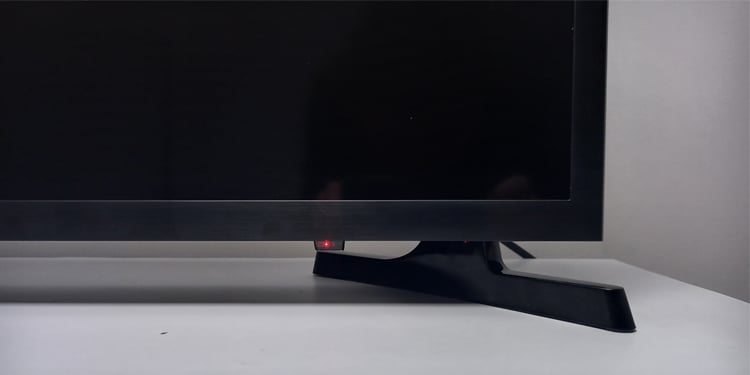
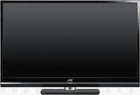
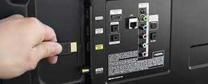
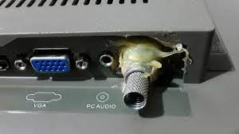
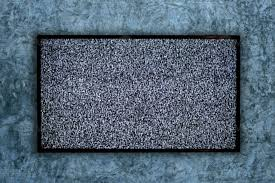
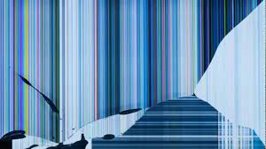

fallas comunes
el televisor no enciende o no responder

enciende luz de stand by pero no responde

enciende con pantalla oscura y con sonido

no funcionan las entradas de cables
no responde el control remoto
se ve oscuro-tras luz

rotura de antena, pin de cable, entrada de cable

no tiene imagen
sale olor a quemado
no se escucha el sonido
diferentes colores

pantalla rota